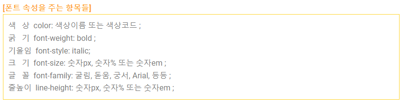
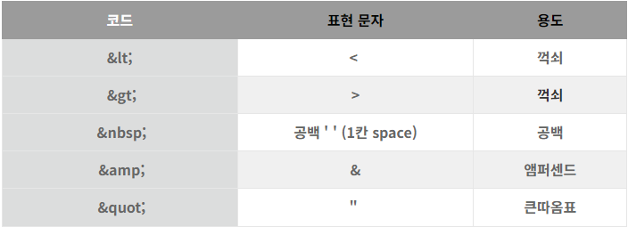
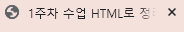

1주차 수업을 정리해보자
먼저 우리는 서버-클라이언트 구조를 사용한다
개발자가 서버에 코드를 저장하는 구조이기에 수정이 상당히 용이하다
게임 같은 경우에는 0.X ms 가 사용자에게 타격을 줄 수 있지만 웹은 그렇지 않다
프론트엔드는 (HTML,CSS,SCRIPT)를 주로 활용
백엔드는 (SERVER)-JSP 를 주로 활용
[1]
JSP란.....
Java[2]
를 이용한 서버 사이드 템플릿 엔진이다 자바를 웹서버에서 쉽게 쓰기 위한 기술이며 언어가 아니다
정도를 알아두자
html의 기술 3가지
| tag |
box model(개념) |
dom |
| html의 가장 기본단위 tag의 집합이 html이다 |
모든 태그는 사각형이다라는 개념 블록 쌓기 생각하면 편하다 |
모든 tag는 계층 구조를 가진다 |
| tag들 마다 고유한 기능 있음 |
눈에 보이는 것은 모두 네모다 동그라미도 네모다 |
계층을 각각 나누는 것이다 부모 자식 띄어쓰기 탭으로 나눈다 |
SEO 개념
정의 : Search Engine Optimization
검색했을때 상위권에 나오는 글이 되기 위해서는 SEO를 고려해서 개발해야함
즉 DIV 떡칠이 아닌 다른 태그 EX : h1 , p 등등을 잘 고려해서 개발해야한다
정답은 없기 때문에 항상 논리와 근거를 잘 생각해서 개발에 임하자
span 사이에 공백을 없애기 위한 방법
| 1 |
span을 같은 라인 inline에 사용한다 (한줄에 작성한다) |
| 2 |
참조 구문을 이어서 작성한다 <!-- --> 구문을 span 사이에 넣는다 inline 응용 기법 |
| 3 |
마이너스 마진 이용 css의 .info에서 - (글자의폰트 크기)만큼 마진을 넣는다 |
Table 직빵 활용
* <td> <th>의 차이는 굵은 글씨이다
* border=1 을 이용해서 표에 줄을 그을 수 있다
* table 값에 width 를 100%로 주면 div와 같은 효과를 볼 수 있다. 가로로 무한
* 가장 위에 있는 값에 %를 주면 아래는 자동으로 설정된다
*반대로 공백을 넣고 싶다면?
| "1. "
|
를 넣는다 Non-breaking space로 1칸의 공백을 의미한다 |
| "2. "
|
를 넣는다 2칸의 공백을 의미한다 |
| "3. "
|
를 넣는다 3칸의 공백을 의미한다 |
* 글자 크기 바꾸기 font-size / px 나 %로 주로 설정한다
* 색 바꾸기 color="원하는 색"

html코드를 텍스트로 대체할 수 있는 다양한 방법

*표 클릭시 전체 내용이 있는 링크로 이동합니다
| " "
|
를 넣는다 Non-breaking space로 1칸의 공백을 의미한다 |
| " "
|
를 넣는다 2칸의 공백을 의미한다 |
| " "
|
를 넣는다 3칸의 공백을 의미한다 |
https://hianna.tistory.com/300 여기 부터 이어하기
*본문 작성시 h1~h6까지 사용가능
*글자 가운데 정렬원할시
-> style="text-align: center"
*title 꾸미기

아이콘을 favicon이라고 부른다
제목은 title 칸에 작성하면 된다